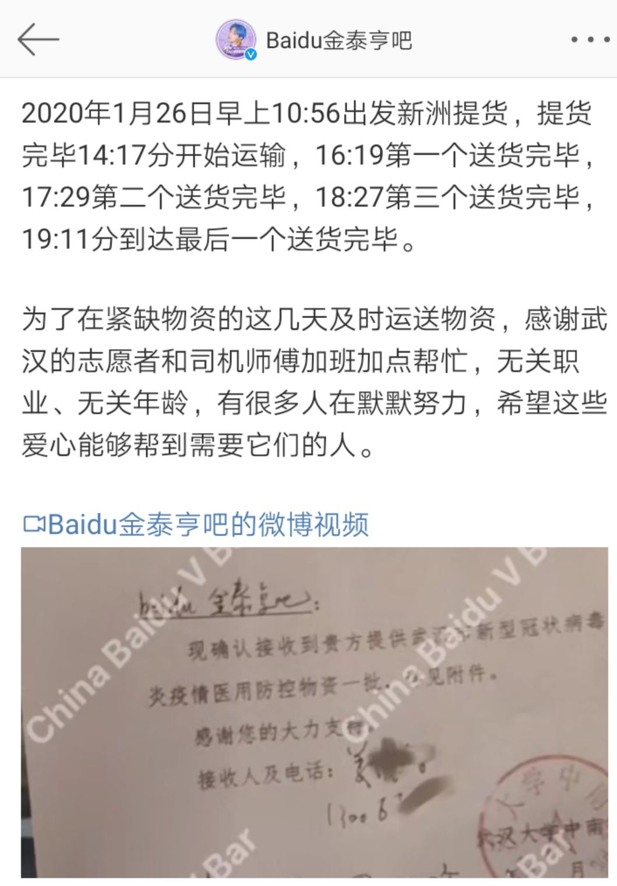
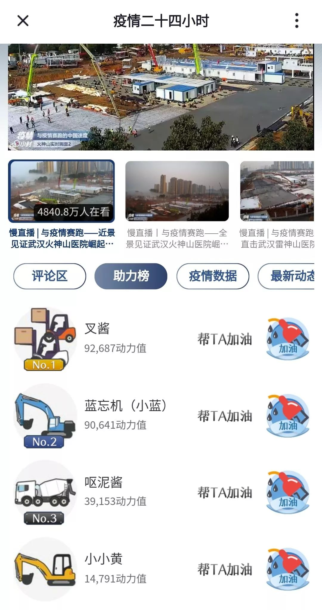

湖北危机之下，饭圈女孩的驰援
原文链接 备份链接 目前，几个粉丝站的物资除了少量还在路上，大部分已经送到需要的人手里，然而尽管如此，全国各地的物资缺口仍然很大。 文 | 王超 高逸佳 薛雨霏 编辑 | 沈小山 “这些天大家也真的很拼了，晚上核对整理信息有时三四点才睡， …

王源粉丝联合应援博公布的财务明细里，最小的一笔收入是0.12元。金泰亨吧公布了物资到达每一家医院的时间，最晚一批于1月26日19点11分送达武汉大学人民医院。
在武汉疫情的支援行动中，饭圈成为一股透明、高效的民间力量，一套机制在背后运转。
···············
❶
***8立方米、740公斤、240箱***
捐款公告刚发布一小时，总金额就跃过了31万。2715人、2716人、2717人……前来捐款的粉丝仍然不断，王一博粉丝后援会“紧急”决定，捐款通道必须关掉——钱太多，不一定能买到那么多的医疗物资。
这是1月23日的傍晚。三天前，王一博后援会管理群里正在讨论，是不是该向武汉捐点什么。当晚，钟南山接受央视采访，证实新型冠状病毒存在人传人。有人提议捐款，但她们当时还没有看到任何一家慈善机构公开募捐。于是她们决定自家集资，由后援会购买物资寄往武汉。
集资完成后，坏消息传来，提前联系好的口罩厂家告诉后援会，全部库存被征用，她们预定的10万只口罩泡汤了。管理群里炸开了锅，手上的31万仿佛烫手山芋，怎么花出去？有粉丝提议，干脆把钱捐给红十字会吧。后援会管理静静坚决拒绝，捐赠公告上写明了要捐物资，就一定要做到。
群里一共18个人，分为两组。由于物资紧缺，一组有16位管理分头联络物资，另一组则负责对接医院和物流，两方同时推进。从除夕到初二，大家每天更新消息。身在国外的艾瑞斯打了几十通电话，找遍了批发采购平台上的医疗厂家，却总是在凌晨三四点失望地睡去。数十家厂商，有的库存被征用，有的已经放假，还有的产品不符合医院使用标准。
24日，艾瑞斯在粉丝群里找到了新线索。一个粉丝提供消息，自家邻居在3M公司上班，可以帮忙搭线。艾瑞斯联系上3M武汉经销商，却被告知，口罩都已被征用。经3M介绍，艾瑞斯又找到厦门、山东两家工厂。
老板拿出采购合同，艾瑞斯和静静再三查看，多加了4项要求：厂商要提供明确到时刻的交货时间、采购费用明细、法人代表身份证复印件以及营业执照。厂家库存不够，老板临时召回员工，还叫上亲戚朋友，30多人在大年初一加班整天。
最终，厦门厂商提供500个防疫面罩和7000对替换滤芯，山东厂商提供200件防疫服和200副防护眼罩。
与此同时，静静已经在向中华少年儿童慈善救助基金会求助，她和儿慈会的工作人员相熟。2019年，王一博成为中华儿慈会专项基金爱心大使，儿慈会的工作人员主动找到后援会，希望粉丝们向他们的公益项目捐钱。半年多时间里，后援会为儿慈会的项目集资超过30万。
儿慈会工作人员告诉静静，微公益和红十字会有合作，后援会只需向红十字会捐款，由红会来联络物资，并分发到武汉各医院。但后援会联络医院时，一家医院的医生委婉告诉她们，这样中途会耽误一点时间。后援会决心要直接捐给医院。
之后，儿慈会将武汉同济医院介绍给了静静。同济医院答复说，谢谢你们的物资，但是快递已经进不来了。静静打电话问顺丰、京东，在各大物流公司公众号后台提问，物资能不能进武汉？答案都是否定。
25日，中国邮政、顺丰、京东等10家物流企业宣布，将开通全国各地驰援武汉救援物资的绿色通道，但优先向公益机构、医疗机构、企事业单位等开放，暂不接受个人捐赠物资。当天，静静看到小米公司的微博：1月24日凌晨，小米捐赠医疗物资进入武汉。静静想，小米能进去，那我们是不是也能跟着小米进去？她打开通讯录，找到了之前曾合作过的小米集团工作人员——王一博是Redmi手机代言人，后援会曾受邀参加其新品发布会。小米答应得很痛快，第二天上午就帮忙联系到京东物流的在地货车，承诺免费将货物从厦门运到武汉同济医院。
26日中午12点，8立方米、740公斤、240箱、价值28万的物资，准时从厦门出发，发往武汉。
四天后，物资抵达武汉，之后，却迟迟没有被签收。静静询问物流方，回复说：特殊时期，速度比较慢。发微信问同济医院，也一直没有得到回应。
直到1月31日，环球网的官方微博@了王一博粉丝后援会，静静点开图片，看到纸板箱整齐码在医院门口，每箱都贴着标识：”众志成城，抗击病毒！武汉加油，湖北加油！此批物资由王一博后援会捐助。“
这时她终于确认，她们成功了。

环球网的微博
❷
***公开透明是行事规则***
饭圈累积的能量在武汉疫情中释放。不完全统计，肖战粉丝一共捐出256万元。王源粉丝联合应援博募集了40万元，已经落实20万个口罩和15万只医用手套。焉栩嘉后援会集资了20万元，给武汉捐去20万只口罩、140台紫外线消毒车和280支灯管。阿云嘎后援会甚至还捐了4台分子筛制氧机和7台脉搏检测仪。
发布这些壮观的数字之前，后援会们都经历了重重难题。在一个物资抢购群里，几十名成员都来自各家后援会。金泰亨吧的TATA从中国医药网拉了一个医疗用品厂商清单，王俊凯后援会的美美发动认识的粉丝发朋友圈，要到了一个春节复工的厂商名单。
何洛洛和焉栩嘉CP后援会的小z联系了三四十家医疗器材厂，好不容易联系上一家有口罩库存的，老板开价5块，比市场价高上4倍。小z告诉厂家，她是要捐给武汉的。老板回，管你捐不捐，五块一个，不还价。有的厂家迟迟不给口罩质检书，小z从晚上等到第二天下午三点，最后发现口罩不适合医用。
翟潇闻后援会管理苹果联系上一家医院供应商，但对方拒绝平台交易，坚持微信汇款，苹果担心受骗，只好作罢。
后援会所有的成果和过程都在社交媒体上清晰呈现。王源粉丝联合应援博公布的财务明细里，最小的一笔收入是0.12元，来自粉丝支付宝转入。金泰亨吧公布了物资到达每一家医院的时间，最晚一批于1月26日19点11分送达武汉大学人民医院。

金泰亨吧公布的物资到达每一家医院的时间
公开透明是饭圈的行事规则。一旦公布账目不及时，或者查账方式不明晰，质疑声马上就会冒出来：管理们是去买海景房了吗？“海景房”是饭圈一个流传已久的梗——2015年，渡边麻友应援会发起总选举集资，后来应援会被爆出贪污，金额超过150万元。还有传言流出，应援会管理拿这笔钱购入了一套海景房。
金泰亨吧的管理TATA打了一个比方：这相当于一个匾额挂在大门口，一切从偶像的利益出发，一切从粉丝的利益出发。反之，独裁的后援会管理随时可能被粉丝轰下台。一位接受采访的后援会管理说，她的上一届管理曾和一位粉丝发生口角，把对方踢出了官方粉丝群，但因为私人恩怨踢人，是集体制定的“群规“中明令禁止的行为。粉丝们愤怒地对后援会进行围攻：你不能觉得老子就是法！很快，这位管理在炮火中主动辞职。
成为一名粉丝满意的后援会管理并不简单。苹果本科就读于中国最好的商学院，尚未硕士毕业，就收到一家互联网巨头的offer。2019年12月，苹果通过竞选上任，而竞选的第一步是， 投简历。
她调出自己的求职简历，把实习经历那一栏改成自己的追星史。苹果有近十段互联网公司实习经历，但追星经验相较也不遑多让。她从2008年开始追星，光是给翟潇闻开站子就开了两个，一个用在比赛时打投，另一个主要是出道后打钱和应援。
简历审核通过，接下来是一个月的实习期，期间她独立完成了一次媒体应援。在实习报告里，她严肃地写下：我的能力和管理位置相匹配。
实习期既满，粉丝们投票决定最终的管理人选。第一轮投票在由后援会各组和散粉组织组成的参议群里进行，和她同时竞聘的另一位候选人胜出。接着，群里又商议，这样不够公开，要投就要公投。
当天下午，后援会官方微博发布公告，只要提供超话等级和集资记录，证明你是翟潇闻唯粉，就可以参与后援会换届投票。很快，公投群里涌进来两百多个粉丝。当晚，公投开始。首先发布竞选人的实习报告，然后进入第二个环节：答辩。
“怎么调节官方后援会和民间粉丝组织之间的关系？”
”官方不是完全的领导，而是应该向民间组织提供帮助。“
“你之前的生活或追星经历，对你担任管理有什么帮助？”
“我是学市场营销的，很懂得推广营销这一套。”
“你认为如何建立起后援会的信任？”
“一是做好每件小事，二是吸取建议多和粉丝沟通，三是财务方面要尽量公开透明。”
投票完毕，苹果的支持率超过规定的2/3，成功当选。
上任后，为了财务明晰，苹果特意换了一个双卡双待的手机，用新手机号注册了一个后援会专用的支付宝账号。年初，翟潇闻登上一本时尚杂志的电子刊封面，粉丝为此集资，苹果的这个支付宝账号的当月流水超过了200万。
1月19日晚上，苹果对着全体粉丝做了一次语音直播。她先是回顾了这段时间后援会的工作，叮嘱大家：明天一定要买电子刊！然后邀请了各个官方组织的负责人一起连麦，很像是一次直播问政，直播里，粉丝们问的最多的问题是：后援会之后的工作重点是什么?
苹果回答，接下来要回归到日常的数据控评和反黑净化，还要做好上海场演唱会的应援。那时她没想到，演唱会将因为疫情延期，而后援会的下一步工作，是为武汉捐款52800元，并捐赠1000副护目镜。
❸
*********“这种风气裹挟着*********
*********圈子里面所有的人”*********
曾经，公众对粉丝做应援的印象是“排面”。2017年王俊凯18岁生日时，粉丝为他策划了“海陆空”应援：认领了18只海洋濒危动物、在全球包下5000块大荧幕、在南纬60°的天空买下18颗星星，连起来是“WJK”的字样。应援出圈了，也带来争议，有路人评价：干嘛把钱浪费在这上面？
做公益不一样，公众既能理解，也会支持。武汉疫情一来，豆瓣几个小组就开始陆续搬运各个后援会的捐赠报告，网友在贴子下面点评：夸夸XX、XX是捐的最多的吧、就差XX没捐了。
“这种风气裹挟着这个圈子里面所有的人，不管是管理层还是下面的普通粉丝，大家都觉得我是一个追星女孩，我就得做。”苹果说。
除夕那天，“追星女孩 募捐”登上热搜。武汉疫情微公益的捐款榜单上，前50位都被各家后援会包揽。营销号们发起了对追星女孩整齐的夸奖：“用炙热的心追星，也用最热血的心公益”、“太给爱豆争气了”。苹果感受到一种激励：就该给那些瞧不起追星女孩的键盘侠们看看。
粉丝也着急，不停地催后援会，怎么还不做？同样是在除夕，小z看到了别家后援会发出的捐赠公告，但这时候，她还没找到物资。“别家能找到，我为什么找不到？肯定是我不够努力。“
凌晨三四点，她迷迷糊糊地睡了过去，半小时后，又莫名其妙地醒来。醒来第一件事，她摸来手机，看有没有厂商回复消息。后来，小z的策略是“捐款捐物两手抓”，先捐款，“给粉丝们吃定心丸”，不能让粉丝们看到别家都捐了，自家却没动作。

截止2月4日18：30，武汉疫情微公益的捐款榜单
王源粉丝联合应援博发出捐赠通告后，热门转发说：“饭随偶像”、“每一个困难时期，王源粉丝都和大家携手共进。这份源自王源的爱和担当，始终如一”。偶像并不在场，但在粉丝做公益的过程里被反复提及。粉丝相信，公益能为偶像的事业助力。
慈善机构也在学习利用粉丝的力量。2016年，王俊凯全国地方站联盟，和中华思源工程扶贫基金会的一个助学项目展开合作，当时，这个项目还未被饭圈熟知。四年后，这个项目的微博一天就和好几个站子互动，从爱豆、演员到兵乓球选手、电视剧角色，有粉丝估算总数能达到几百个。
当蔡徐坤宣布要去海南儋州进行扶贫调研后，在6小时内，粉丝就攻陷了当地土特产鸭蛋的购买链接，现货卖完后，4000箱的预售也被席卷一空。对蔡徐坤国王街82号站的小街来说，这是她们向官方释放出的积极信号。
❹
***小叉车和叉烧包***
1月29日晚，火神山、雷神山医院建设实况直播上线。饭圈的逻辑也开始在这里渗透。工地上的小型黄色挖掘机，被叫做“小黄”，小型蓝色挖掘机，叫“小蓝”，小型叉车，叫“叉酱”，小型铲车叫“铲酱”，混凝土搅拌车，叫“呕泥酱”。
小叉车的微博超话有4.8万粉丝，一度是饭圈超话榜的第一名。它的粉丝叫做“叉烧包”。有人在这个超话里发帖问：大家原本是谁的粉丝？800多条回复里，点赞数最多的回答是“博君一肖”，其次是“德云女孩”。
粉丝把小叉车拟人化画成漫画，又把监工直播里小叉车的画面单独截出来，做成小叉车的“直拍”。控评模板诞生了：顶级流量小叉车，工地宝贝小叉车，工地最靓小叉车。这些评论在营销号下方和监工直播间刷屏。一个名叫“叉酱数据站”的账号做了一份教程，教大家怎么在央视设置的直播助力榜为小叉车投票。“你不投，我不投，小叉何时能出头？”

火神山、雷神山医院建设实况直播助力榜
CP粉小z也是收看小叉车直播的几千万名观众之一。除夕下午，小z终于找到一批能发货的口罩，2300只N95。她本打算直接捐给医院，但医院电话一直占线。一旦集资完成，后援会的首要任务是让粉丝看到花钱的效果。当时，公开发起捐赠的公益组织并不多，武汉红十字会是其中规模最大的一家，又有官方认证。小z把物资捐给了武汉红十字会。
捐后不久，小z看到红十字会公开的账目，“做得乱七八糟”，被曝光积压口罩不发，央视直播还把人记者赶走了。“气得血压都要高了”，采访里，她强调自己的愤怒。
每天凌晨两三点，小z进入直播间。她看小叉车，也看工人铺地基，但更多时间是在看弹幕：有人给施工设备取名叫“吴三桂”，也有人说“上海监工来交班了”，每次都有很多人陪着她一起看。
她不想看到“那些消极负面的新闻”了，小叉车看上去很开心，她也因此觉得日子开心了起来。半小时后，女孩关掉直播，睡着了。
文中人名为粉丝的饭圈ID，部分为化名
GQ报道正在征集疫情防治的相关采访信息，如果您身处疫区、受到疫情影响，或是了解对疫情防治有促进作用的各类信息，欢迎随时与我们联系！
无论您是医护人员、患者及家属、疑似患者、物资供应方、运输方、志愿者、疫区服务业人员、了解疫情知识的专业人士……我们随时准备听到您的声音！
您可以在本文评论区、公众号后台留言，或发送邮件至gqreport@163.com 留下您的联系方式和您能够提供的信息摘要，我们会第一时间与您取得联系。
让我们一起努力，共渡难关！

在公众号后台回复彩蛋，送你一个彩蛋
撰文：张炜铖、王伊文、吴呈杰
编辑：康路凯、吴呈杰
运营编辑：肖呱呱


原文链接 备份链接 目前，几个粉丝站的物资除了少量还在路上，大部分已经送到需要的人手里，然而尽管如此，全国各地的物资缺口仍然很大。 文 | 王超 高逸佳 薛雨霏 编辑 | 沈小山 “这些天大家也真的很拼了，晚上核对整理信息有时三四点才睡， …
原文链接 备份链接 关注并星标消费新声 不错过泛消费任何最新动态 _ _ _ 灾情尤其是规模性的疾病惯于与大城市如影随形，而“城市会因为一些人的腐败而蒙羞”，但对于这些生活于斯的武汉人来说，「不管政府做了什么，人们对自己出生或者成长的地方 …
原文链接 备份链接 以下文章来源于地球青年图鉴 ，作者地青 在湖北疫区物资援助中，一群饭圈女孩动作迅速地为医护人员筹集了不少物资，她们的效率与组织能力令人惊叹。 我们采访了三位参与湖北疫区物资支援的饭圈女孩，从这些95后、00后粉丝身上 …
原文链接 备份链接 2月1日，一家专业从事医药分销配送的企业，开始协助武汉红十字会处理仓库中堆积的援助物资。无序的状况有了很大改观。 1月23日武汉“封城”以来，医院防护物资告急，各种民间力量应声而动。 华中科大和武汉大学的美国北加 …
原文链接 备份链接 武汉春寒料峭，疫情仍在蔓延。但也因为抗击疫情，本不相识的司机和医生之间，达到了前所未有的默契。“谢谢”和“加油”，是他们每次相遇和分开的标记 文 |《财经》特派武汉记者 刘以秦 编辑 | 谢丽容 图1: 在路上的爱心司 …